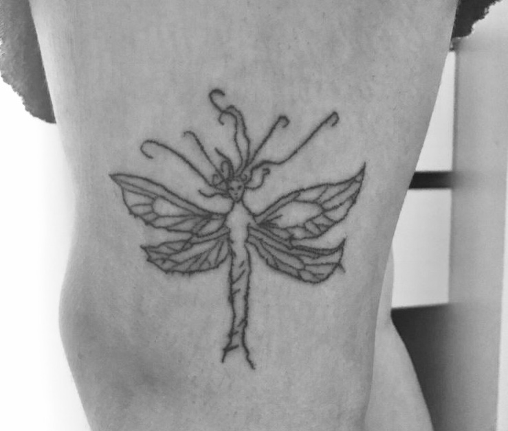
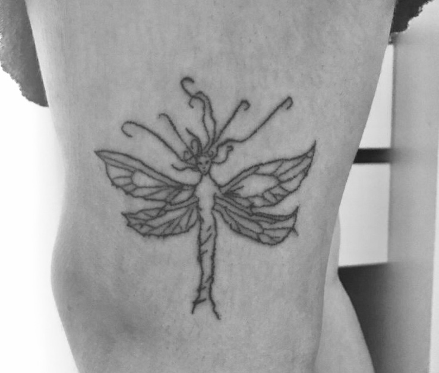

Tatuajes
El tatuaje "handpoke" es una técnica de tatuje tradicional, se tatúa sin maquina, tambien llamado "Stick and Poke". Esta ténica es menos invasiva a la piel, por lo que el proceso de curado es mas amigable y rápido que el de los tatuajes a máquina.
ALGUNOS TRABAJOS

 
